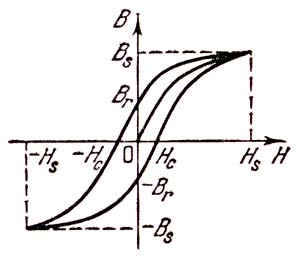
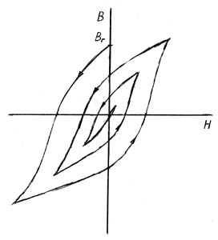
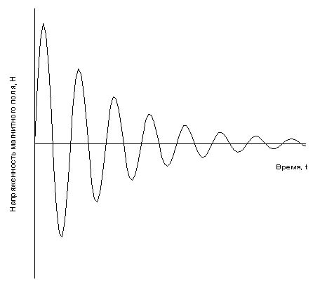
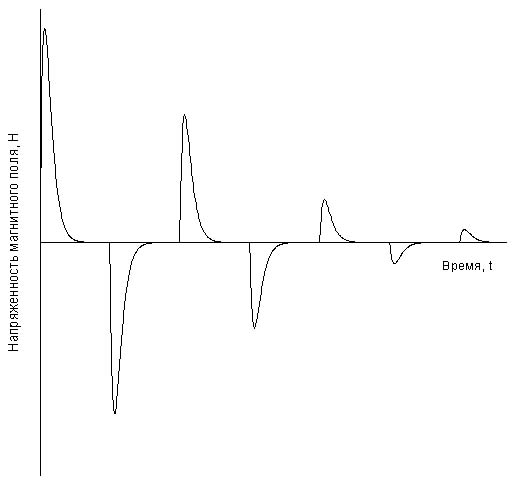
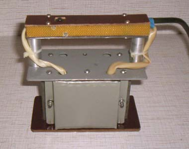
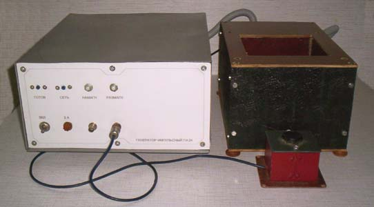
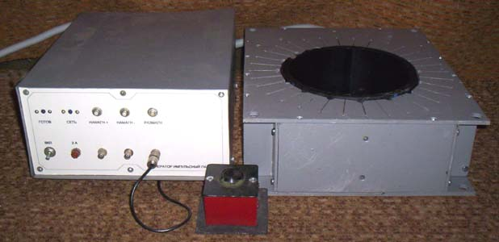
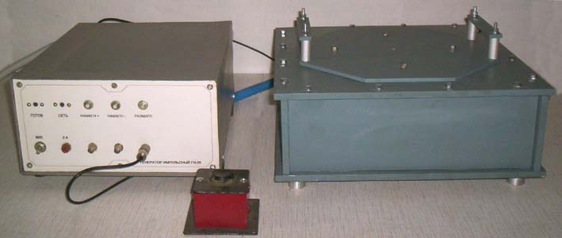
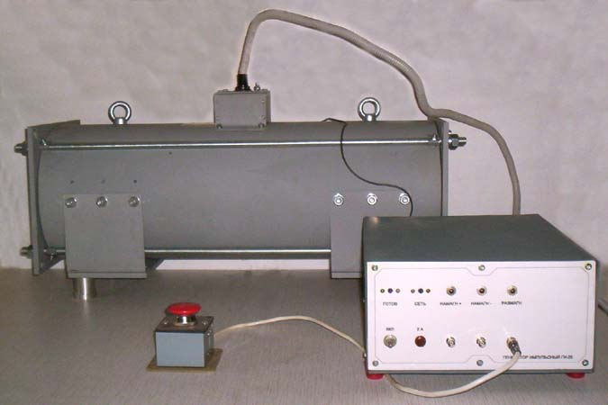

Установки и устройства для размагничивания стали
Теория
Среды, способные во внешнем магнитном поле создавать собственное магнитное поле, называются магнетиками. Существуют три основные группы магнетиков: диамагнетики, парамагнетики и ферромагнетики. Железо, никель, кобальт, а также различные сплавы на их основе, в частности, сталь, относятся к ферромагнетикам, т. е. к веществам, в которых собственное магнитное поле на несколько порядков превосходит внешнее.
Способность вещества создавать собственное магнитное поле характеризуется намагниченностью – векторной суммой магнитных моментов частиц (например, атомов или молекул), находящихся в единице объема.
При температуре ниже точки Кюри в ферромагнитном веществе образуются домены – малые области с самопроизвольной намагниченностью до полного насыщения. При наложении внешнего магнитного поля происходит ориентация магнитных моментов доменов в направлении внешнего поля. Степень этой ориентации увеличивается при увеличении напряженности внешнего поля, пока не достигнет предела. Изменение намагниченности ферромагнетика с изменением внешнего поля характеризует петля гистерезиса (рис. 1): кривая изменения магнитной индукции ферромагнитного тела, помещенного во внешнее магнитное поле, при изменении напряженности последнего от +Hs до -Hs, и обратно, где Hs - напряженность магнитного поля, соответствующая насыщению. Величина Bs магнитной индукции, достигаемая при значении напряженности внешнего поля, равной Hs, называется индукцией насыщения. Величина магнитной индукции Br, сохраняющейся в образце после уменьшения напряженности поля от Hs до нуля, называется остаточной индукцией.

Рис. 1. Петля гистерезиса ферромагнитного тела.
Итак, когда внешнее магнитное поле уменьшается до нуля, суммарный магнитный момент всех доменов (и ферромагнитного тела в целом) уменьшается до некоторой ненулевой величины, т. е. в расположении доменов остается некоторый порядок.
При температуре выше точки Кюри доменная структура ферромагнетика разрушается.
Так как в ферромагнитном теле при температуре ниже точки Кюри существует доменная структура, т. е. микроскопические области со спонтанной намагниченностью до насыщения и весьма большим собственным магнитным полем, то процедура размагничивания должна, насколько это возможно, разупорядочивать доменную структуру (а не разрушать отдельные домены), чтобы магнитный момент тела или создаваемое им внешнее магнитное поле стремились к нулю. Этого можно достичь двумя способами: проходя по частным петлям гистерезиса в нулевую точку (рис. 2) или нагревая тело выше температуры Кюри (железо 770 0C, никель 358 0C, кобальт 1120 0C).

Рис. 2. Методика размагничивания ферромагнетика.
Для прохождения по частным петлям гистерезиса необходимо воздействовать на образец переменным магнитным полем с затухающей по определенному закону амплитудой (рис. 3, 4). Начальное значение напряженности поля должно обеспечивать намагничивание или перемагничивание ферромагнетика до насыщения.

Рис. 3. Переменное магнитное поле с затухающей амплитудой.

Рис. 4. Импульсное магнитное поле с переменной полярностью и затухающей амплитудой.
Можно также сочетать воздействие нагрева и затухающего переменного магнитного поля, причем нагрев может быть произведен за счет предварительного воздействия на токопроводящий образец переменным магнитным полем в течение некоторого времени.
Глубина проникновения переменного магнитного поля частотой в десятки герц в сплошную сталь составляет ~10 миллиметров (на уровне, достаточном для перемагничивания стали), поэтому для размагничивания массивных стальных деталей могут потребоваться устройства, создающие переменные магнитные поля частотой в единицы герц.
Практические конструкции установок и устройств для размагничивания стали
Типы установок и устройств для размагничивания стали:
Демагнетизатор стали туннельного типа с диаметром проходного отверстия 100 мм
Размагничивание производится с помощью переменного магнитного поля с затухающей амплитудой. Уменьшение амплитуды магнитного поля происходит при перемещении размагничиваемого объекта через центральное отверстие демагнетизатора и удалении от него. Демагнетизатор может подключаться к сети переменного тока напряжением 220 В частотой 50 Гц напрямую или через контроллер, позволяющий получить более низкие значения частоты.
Демагнетизатор стали туннельного типа с диаметром проходного отверстия 200 мм

Размагничивание производится с помощью переменного магнитного поля с затухающей амплитудой. Уменьшение амплитуды магнитного поля происходит при перемещении размагничиваемого объекта через центральное отверстие демагнетизатора и удалении от него. Демагнетизатор может подключаться к сети переменного тока напряжением 220 В частотой 50 Гц напрямую (с компенсатором реактивной мощности) или через контроллер, позволяющий получить более низкие значения частоты.
Демагнетизатор стали: 6-полюсный кольцевой постоянный магнит диаметром 60 мм, приводимый во вращение


Размагничивание производится с помощью переменного магнитного поля с затухающей амплитудой, которое создается при вращении демагнетизатора, перемещении его вдоль размагничиваемого объекта и удалении от него. Вращение может осуществляться с помощью различных инструментов, в том числе и ручных (без использования электроэнергии). Скорость вращения демагнетизатора определяет частоту переменного магнитного поля. При размагничивании массивных стальных объектов она может составлять порядка одного оборота в секунду.
Демагнетизатор стали: электромагнит переменного тока с незамкнутым стальным сердечником

Размагничивание производится с помощью переменного магнитного поля с затухающей амплитудой. Переменное магнитное поле незамкнутого участка магнитной системы демагнетизатора воздействует на размагничиваемый образец. При этом амплитуда индукции магнитного поля в зоне расположения образца изменяется от максимума до нуля при движении демагнетизатора вдоль поверхности образца. Демагнетизатор может подключаться к сети переменного тока напряжением 220 В частотой 50 Гц напрямую или через контроллер, позволяющий получить более низкие значения частоты.
Установки импульсного размагничивания стали контейнерного типа
Для размагничивания достаточно крупных стальных деталей и инструмента могут использоваться установки импульсного размагничивания, принцип работы которых основан на использовании импульсного магнитного поля заданной частоты с переменной полярностью и затухающей амплитудой. Установка состоит из биполярного генератора мощных импульсов тока [2] и индуктора. Размер размагничиваемых деталей может достигать 300 мм и более. Например, опробовалась и показала хорошие результаты установка для размагничивания шариковых подшипников внешним диаметром 320 мм высотой 100 мм.
Размагничивание стальных изделий осуществляется посредством переменного магнитного поля с затухающей амплитудой. Использование импульсного режима позволяет существенно сократить затраты электроэнергии, снизить тепловые потери и повысить производительность. При этом для создания размагничивающего магнитного поля используется индуктор, подключенный к генератору импульсов тока с переменной (чередующейся) полярностью и затухающей амплитудой [2]. Стальной образец помещается внутрь индуктора в зону размагничивания, после чего запускается генератор импульсов тока. Ранее существовавший порядок доменной структуры ферромагнетика разрушается, и образец размагничивается. Начальная напряженность магнитного поля в зоне размагничивания достаточна для максимально полного размагничивания образцов из любых марок стали. Демагнетизатор может использоваться для размагничивания крупных стальных объектов, размеры которых достигают размеров зоны размагничивания (или даже превышают по высоте).




Производится разработка новых устройств и установок для размагничивания стали.
Методика контроля качества размагничивания
1. Приблизительно оценить качество размагничивания образца иногда удается с помощью мелких стальных предметов, например, гвоздиков или опилок, предварительно также размагниченных [1]. Таким способом, в частности, можно проводить проверку различного инструмента, заготовок, деталей, размагничивание которых направлено на предотвращение прилипания к ним ферромагнитного мусора. Если образец не оказывает силового воздействия на предварительно размагниченные мелкие стальные предметы, то он считается размагниченным. В основе подобной приблизительной оценки собственного магнитного поля образца лежит весовой метод измерения магнитной индукции.
2. Использование магнитного флюксметра (веберметра) с измерительной катушкой, размеры которой позволяют размещать в ней размагничиваемую стальную заготовку, деталь или инструмент. Измеряется изменение магнитного потока через катушку, когда она надевается на контролируемый образец или снимается с него. По результатам измерений можно определить магнитный момент образца в направлении оси измерительной катушки и рассчитать индукцию собственного магнитного поля образца на любом, достаточно большом по сравнению с размерами образца, расстоянии. Если она не превосходит заданных значений, то образец считается размагниченным.
3. Использование микротесламетра [7], позволяющего измерять магнитные поля, сопоставимые с магнитным полем Земли или более слабые. Контролируемый образец подносится на некоторое расстояние к датчику микротесламетра. За счет внесения образца в зону измерений показания прибора изменяются. Это изменение может быть вызвано как остаточной намагниченностью образца, так и его способностью искажать и усиливать магнитное поле Земли. Поэтому производится поворот образца на 180 градусов. Находится изменение магнитной индукции, вызванное разворотом образца. Это изменение и характеризует усредненную остаточную намагниченность образца в соответствующем направлении. По результатам измерений можно рассчитать индукцию собственного магнитного поля образца на любом, достаточно большом по сравнению с размерами образца, расстоянии. Если она не превосходит заданных значений, то образец считается размагниченным.
4. Непосредственное сканирование поверхности стального образца щупом тесламетра или микротесламетра [7]. Если магнитная индукция на поверхности образца не превосходит заданных значений (обычно в диапазоне 1 ... 10 Гс или 0.1 ... 1 мТл), то образец считается размагниченным.
Ссылки:
28.04.2006
12.02.2007
15.03.2007
21.11.2007
28.12.2007
14.11.2008
05.09.2012
27.10.2012
06.09.2013
03.10.2015
16.12.2015
Альтернативные источники
энергии
Компьютеры и
Интернет
Магнитные поля
Механотронные системы
Перспективные
разработки
Электроника и
технология